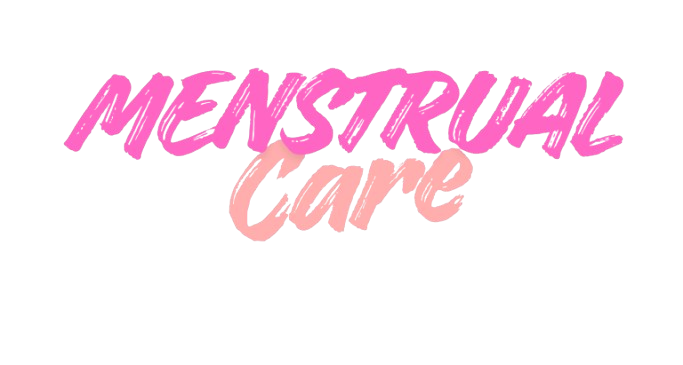

MENSTRUAL CARE
TENTANG
MENSTRUAL CARE
Web Aplikasi Ini dibuat untuk tugas Ujian Akhir Semester saya dan Aplikasi Ini tidak hanya wanita yang bisa menggunakan bagi laki laki pun bisa untuk mengontrol keadaan pasangan mereka ketika sedang menstruasi, besar harapan web aplikasi Ini dapat saya kembangkan dikemudian hari untuk membantu dan mengontrol seputar Menstruasi